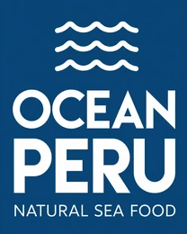
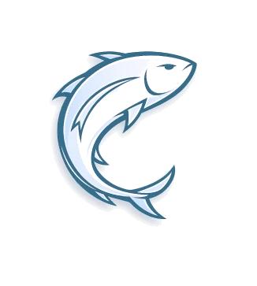
진한 풍미와 고급적인 맛의 조화
참치뱃살 3번도로
참다랑어
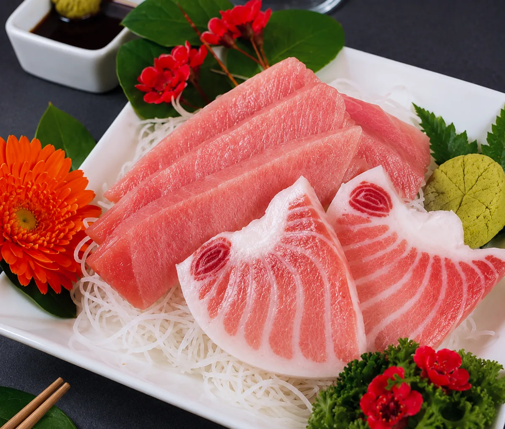
참다랑어
CHECK POINT!
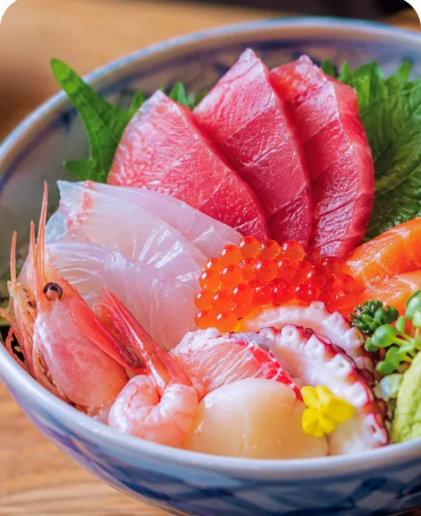
덮밥용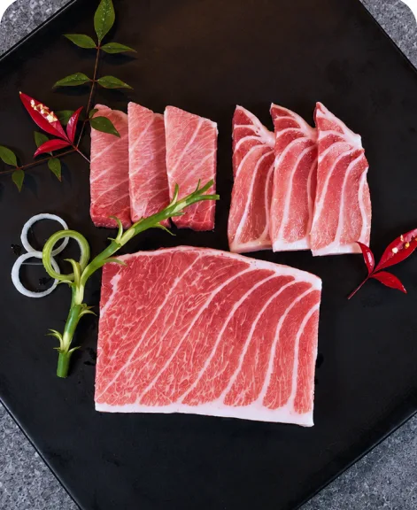
횟감용- 01Info
원양산 50~60상 뱃살 3번도로
- 02Comp
배꼽도로/오도로/주도로 구성
- 03Quality
초밥/덮밥/횟감 사용에 최적화
제품의 세부 사항은 어떤가요?
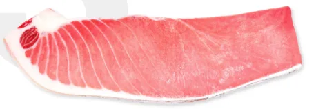
1번과 5번 사이,
가장 활용도 높은 선택
참치 도로는 번호(1~5)에 따라 지방의 농도와 식감이 달라집니다. 3번 도로는 지나치게 기름지거나 담백하지 않은 중간 지점으로, 고소한 풍미와 안정적인 식감이 조화를 이룹니다.
<3번 도로 부위 구성>
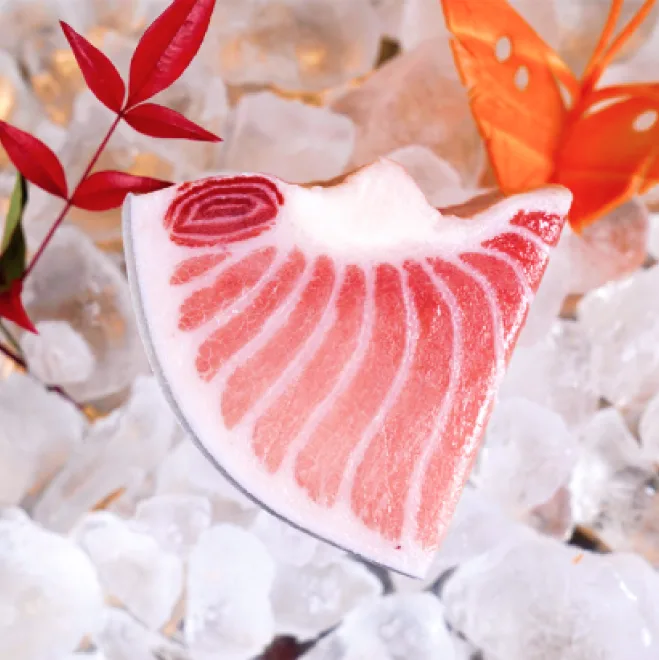
배꼽도로
꼬독한 식감과 지방의 고소함, 참치의 고급진 풍미를 자극하는 부위
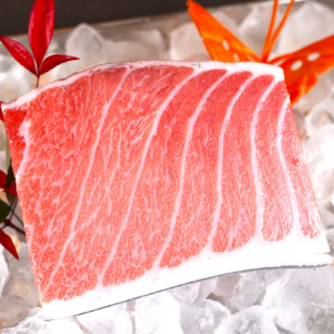
오도로(대뱃살)
부드러운 식감과 쫄깃한 식감을 함께 가진 지방이 풍부한 대뱃살 부위
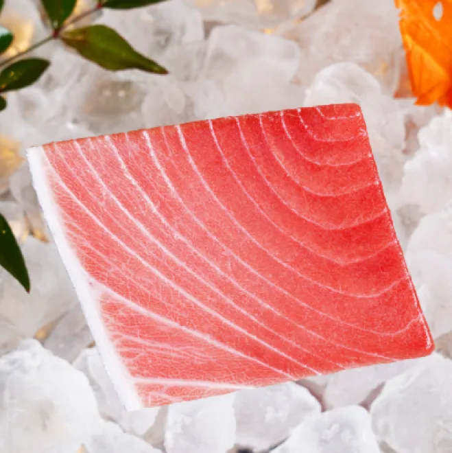
주도로(중뱃살)
뱃살 부위 중 가장 기름이 적고 부드럽고 담백한 맛을 가진 부위
자세한 사이즈는 어떻게 되나요?
원물을 재단하는 과정에서 중량의 손실이 있습니다.
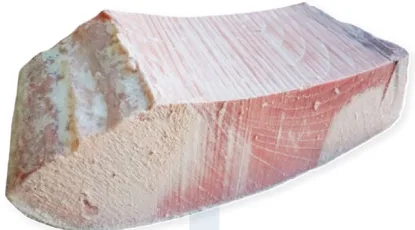
2.5 cm 재단
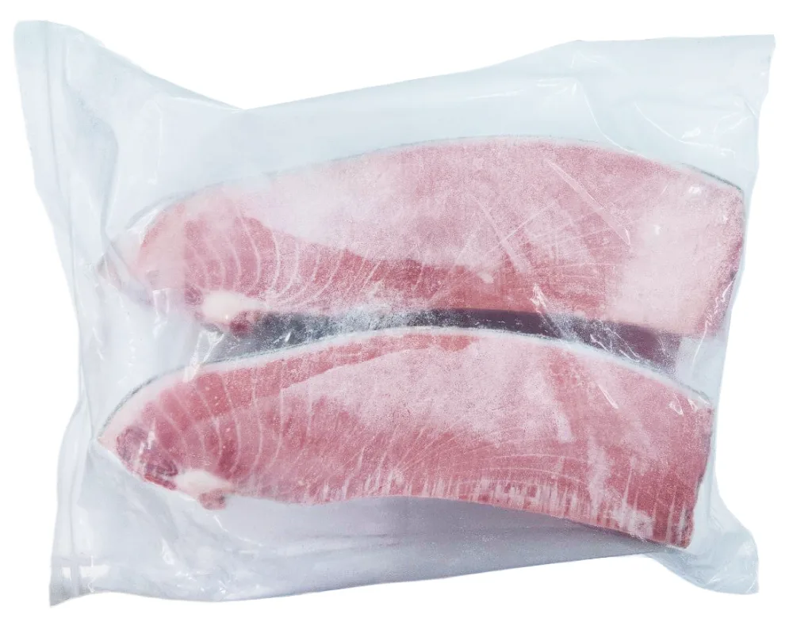
재단 후 비닐 포장재 밀봉
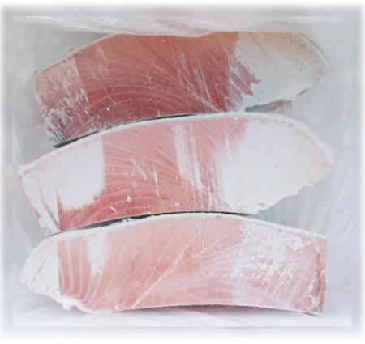
40°C 이하 냉동 보관 후 택배 포장
상품 특성상 원물의 크기에 따라 형태의 차이가 날 수 있습니다.
제품 포장은 어떻게 오나요?
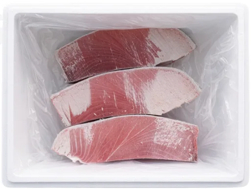
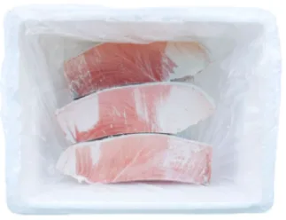
배송 거리에 따라 아이스 팩과 드라이아이스를 이용해 가장 최상의 상태로 전달해드립니다
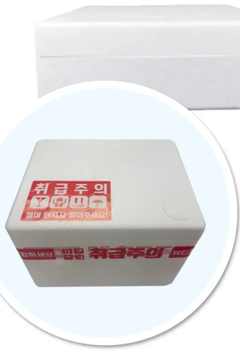
- 아이스 팩
- 아이스 박스
- 드라이아이스
제품의 정보 고시는 어떻게 되나요?
| 제품명 | 참다랑어 뱃살 3번 |
|---|---|
| 수입원 | 상품별도표기 |
| 판매원 | 주식회사 오션페루 |
| 원산지 | 원양산 (태평양/인도양) |
| 내용량 | 6/12 KG |
| 원재료명 및 함량 | 상품별도표기 |
| 보관방법 | 냉동보관 |
| 소비기한 | 상품별도표기 |